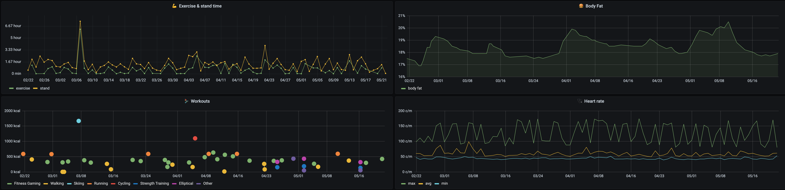
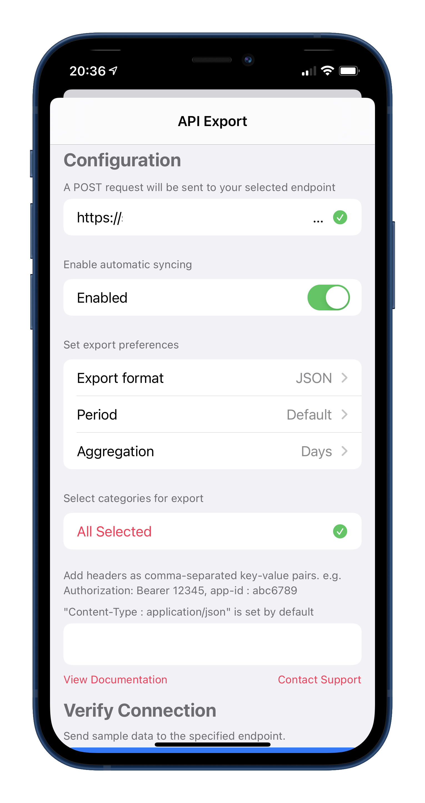
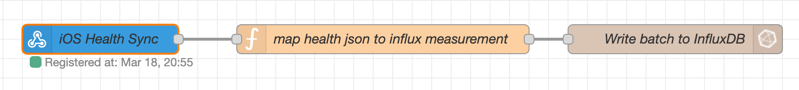
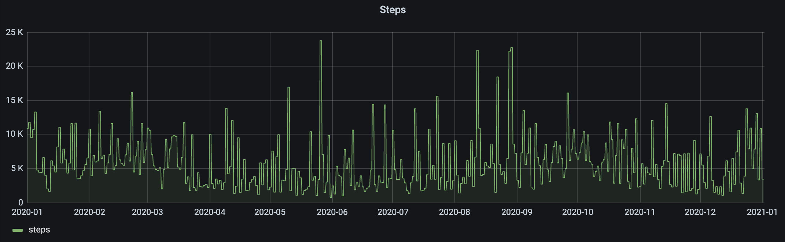
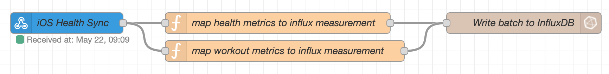

Exporting Apple Health data to Home Assistant
I've recently started using the excellent Influx addon to store data that I want to keep around for a long time. Influx is a time series database which means that it has been optimized to store data through associated pairs of time(s) and value(s). To make use of that data stored in InfluxDB I use a Grafana Dashboard. (Another excellent addon for Home Assistant 😄)

By gathering and analyzing health data you can get some interesting insights about yourself. For example whether there's a correlation between sleep duration and how much your work out. Or if the weather has an effect on your mood. Of course that data could also be used for automations.. e.g. the waking time of the alarm clock is automatically offset by 30min if you went to bed late. With tons of data there's basically no limit to what you can do.
Sadly the Home Assistant app for iOS doesn't have access to Apple Health data and likely never will. This is due to Apple's privacy policy that only allows access to health data for apps that have a specific health focus. This is discussed in this feature request for the Home Assistant app.
There's an app for that¶
Luckily someone made an app to automatically export Apple Health data to a user defined web endpoint. You can find it here. The data is uploaded in a POST request as JSON. The user can define how many days of data should be uploaded and in what time interval the data should be aggregated. Personally I'm uploading the data of "yesterday until now" in a daily aggregation format. So for every measurement there's a total value of yesterday and a up-to-now value for today.

Setting up an endpoint¶
I'm using the webhook node in Node RED to create an endpoint for the POST request of the health export app. The webhook node is really straight forward to use, all you do is set an id for the hook and then you can send data to https://<ip>:<port>/api/webhook/YOUR_ID. To test this right away it's best to use a debug node to simply print the json coming in.
The data coming in should look like this.
{
"data": {
"metrics": [
{
"name": "active_energy",
"units" "kJ"
"data": [
{
"qty": 1599,
"date": "2021-03-17 00:00:00 +0100"
},
{
"qty": 1200,
"date": "2021-03-16 00:00:00 +0100"
}
]
},
...
],
"workouts": []
}
}
Storing the data in InfluxDB¶
Writing to Influx is fairly simple. I'm using the "influx batch node" to write all the measurements to InfluxDB in one go. But you could also split them up into seperate messages and use the regular "influx out" node instead.

Of course the InfluxDB Batch node can't consume the data just the way it comes out of the export json.. so we need to do a little bit of mapping before we can forward it.
This is the content of the function node you can see above. It transforms the json provided by the endpoint into one that can be imported via the batch node.
msg.payload = msg.payload.data.metrics.map(metric => {
//e.g. measurement for 01.01.2020 of active_energy
return metric.data.map(actualMeasurement =>
({
measurement: metric.units, //kJ
fields: {
...(actualMeasurement.qty && {value: actualMeasurement.qty}), //2500 default
...(actualMeasurement.Avg && {Avg: actualMeasurement.Avg}), //Heartrate special
...(actualMeasurement.Max && {Max: actualMeasurement.Max}), //Heartrate special
...(actualMeasurement.Min && {Min: actualMeasurement.Min}), //Heartrate special
...(actualMeasurement.inBed && {inBed: actualMeasurement.inBed}), //Bed special
...(actualMeasurement.asleep && {asleep: actualMeasurement.asleep}), //Bed special
...(actualMeasurement.heartRateVariation && { value: measurement.heartRateVariation.length }), //irregular heartrate special
},
tags:{
entity_id: metric.name, //active_energy
...(actualMeasurement.sleepSource && {sleepSource: actualMeasurement.sleepSource}), //Bed special
...(actualMeasurement.inBedSource && {inBedSource: actualMeasurement.inBedSource}) //Bed special
},
timestamp: Date.parse(actualMeasurement.date) //2021-03-16 00:00:00 +0100
}))
})
.flat() // we've created array for each metric consisting of array of measurements
.filter(e => Object.keys(e.fields).length) // only return entries with fields
return msg;
Info
Since I want to be able to mix & match data from Home Assistant my mapping function is written to produce an output similar to what Home Assistants sensors would natively store in InfluxDB. Alternatively you could setup a dedicated DB for apple health data. Then it may make sense to choose a different style of mapping the data. See the suggestion by wvk in the comments below. Wvk also wrote an updated function which you can find here.
Now for the batch node itself you should choose the following settings:
- Server: [v1.x] Home Assistant Influx
- Version: 1.x
- Host: 127.0.0.1 Port: 8086
- Database: homeassistant
- Advanced Query Options
- Time Precision: Miliseconds (ms)
If writing to the InfluxDB doesn't work for some reason then error logs should appear in the debug panel of Node RED.
Historical data¶
The Node RED flow we've just set up is fully capable of importing historic data as well. So you can use the Manual Sync function of the Health Export app to upload all your existing Apple Health data as well. With a bit of experimentation I've found out that about half a month worth of data can be imported in one go. More then that and the endpoint doesn't seem to be able to handle the request anymore. So you need to do a few requests if you want to upload a years worth of data.. but I think it's not too much of a hassle given that it's a one time thing and all future data is uploaded automatically.

Workout data¶
Now the healthexport app will also export workout data. It looks slightly different but we can use a similar mapping technique as before to map the data into something consistent with Home Assistant.
msg.payload = msg.payload.data.workouts.map(workout =>
({
measurement: "workout",
fields: {
...(workout.humidity.qty && {workout_humidity_percentage: workout.humidity.qty}), //62
...(workout.flightsClimbed.qty && {workout_flightsClimbedCount_stairs: workout.flightsClimbed.qty}), //0
...(workout.swimCadence.qty && {workout_swimCadence_spm: workout.swimCadence.qty}), //0
...(workout.totalSwimmingStrokeCount.qty && {workout_totalSwimmingStrokeCount_strokes: workout.totalSwimmingStrokeCount.qty}), //0
...(workout.intensity.qty && {workout_intensity_met: workout.intensity.qty}), //8.7823
...(workout.temperature.qty && {workout_temperature_degC: workout.temperature.qty}), //3.9
...(workout.avgHeartRate.qty && {workout_avgHeartRate_bpm: workout.avgHeartRate.qty}), //140.78
...(workout.stepCadence.qty && {workout_stepCadence_spm: workout.stepCadence.qty}), //1.449
...(workout.totalEnergy.qty && {workout_totalEnergy_kJ: workout.totalEnergy.qty}), //1723.616
...(workout.maxHeartRate.qty && {workout_maxHeartRate_bpm: workout.maxHeartRate.qty}), //170
...(workout.stepCount.qty && {workout_stepCount_steps: workout.stepCount.qty}), //3081
...(workout.distance.qty && {workout_distance_km: workout.distance.qty}), //0
...(workout.activeEnergy.qty && {workout_activeEnergy_kJ: workout.activeEnergy.qty}), //1471
...(workout.elevation.ascent && {workout_elevationAscent_m: workout.elevation.ascent}), //0
...(workout.elevation.descent && {workout_elevationDescent_m: workout.elevation.descent}), //0
},
tags:{
workout_type: workout.name //Fitness Gaming
},
timestamp: Date.parse(workout.start)
}))
.filter(e => Object.keys(e.fields).length) // only return entries with fields
return msg;
